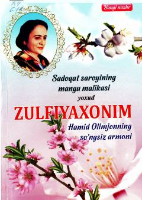

SSZulfiyaxonim va Hamid Olimjon hayoti hamda ijodiga bag'ishlangan esse va she'rlar to'plami.
Mazkur kitob yozuvchi Nurali Qobulning shoira Zulfiya xonimga bag'ishlangan esse va xotiralaridan iborat. Unda shoira bilan birgalikdagi faoliyat yillari esga olinib, Hamid Olimjon va Zulfiyaning eng sara she'rlaridan namunalar keltirilgan.